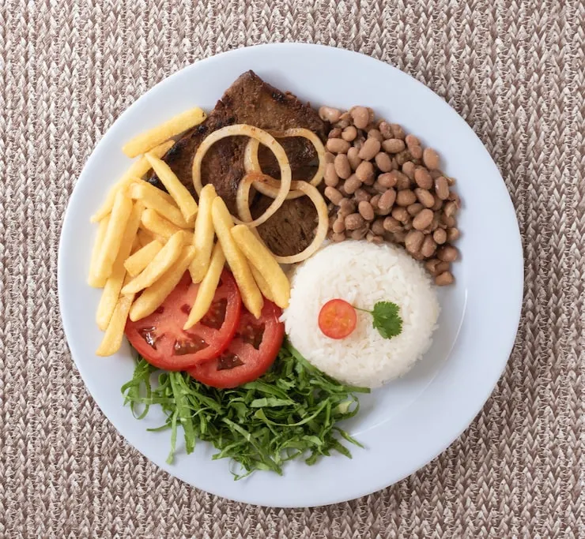

A classic Brazilian Prato Feito featuring white rice, pinto beans, crispy french fries, steak with sautéed onions, and fresh salad. Cook the rice with garlic until fluffy, simmer seasoned beans, and fry the potato strips until golden.
Season the beef steak with salt, pepper, and garlic, then sear it in a hot skillet to your liking. Sauté onion rings in the same pan and plate everything hot alongside sliced tomatoes and shredded greens.
Home